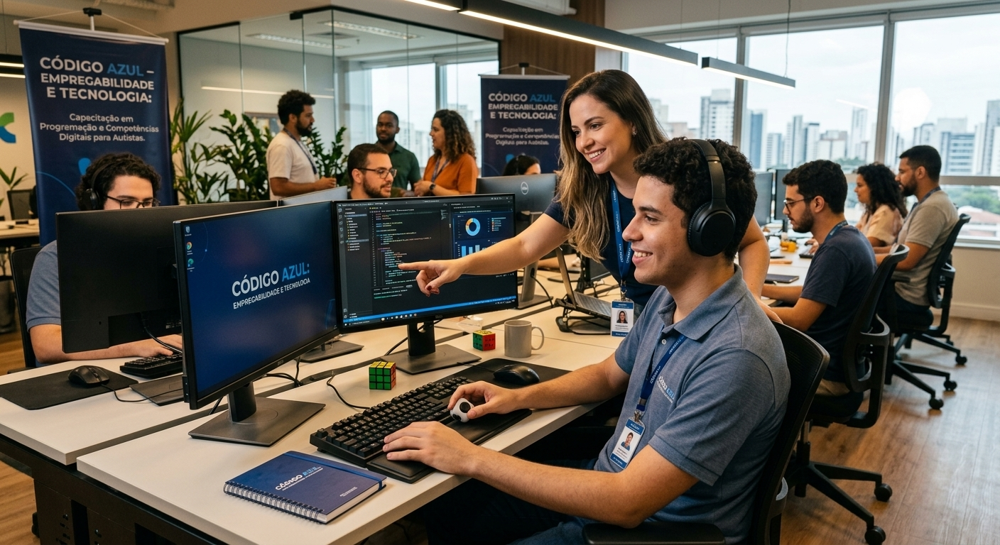
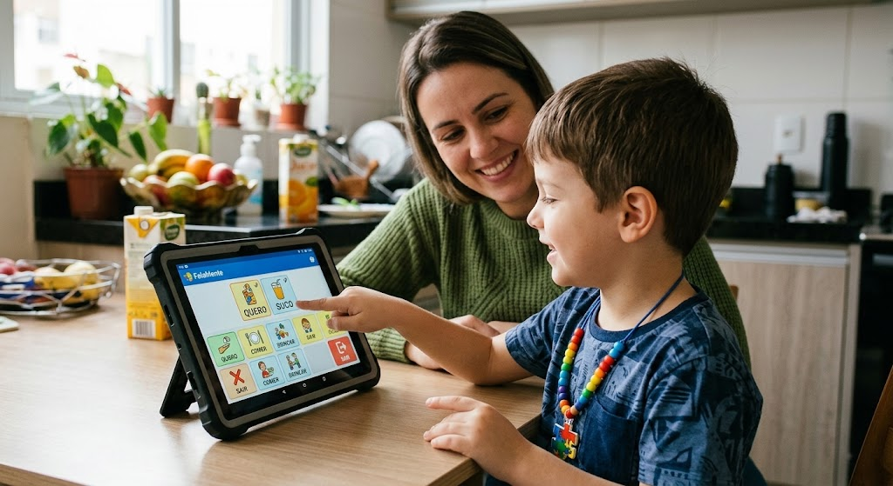
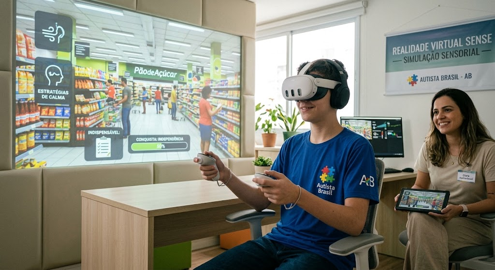
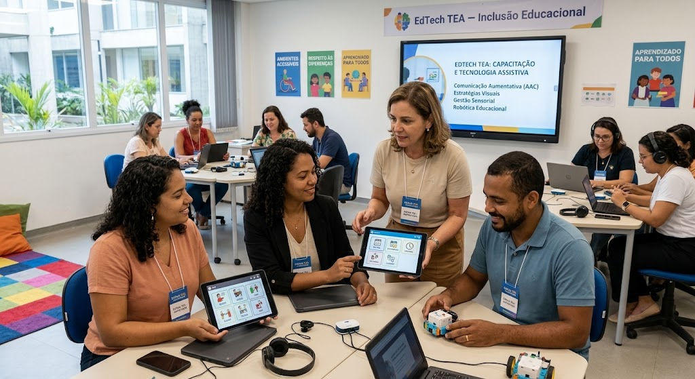

Código Azul
EducaçãoCapacitamos jovens e adultos autistas em programação, tecnologia e competências digitais, transformando talentos e interesses em oportunidades reais de desenvolvimento profissional e inserção no mercado de trabalho.

Conheça as iniciativas que você pode apoiar como voluntário(a) ou doador(a).

Capacitamos jovens e adultos autistas em programação, tecnologia e competências digitais, transformando talentos e interesses em oportunidades reais de desenvolvimento profissional e inserção no mercado de trabalho.

Desenvolvemos soluções digitais e ferramentas de comunicação alternativa que ampliam as possibilidades de expressão, facilitam a comunicação no dia a dia e oferecem mais autonomia, segurança e previsibilidade para pessoas autistas.

Utilizamos a realidade virtual para criar ambientes seguros e controlados que possibilitam a preparação para diferentes situações do cotidiano, contribuindo para o desenvolvimento de estratégias diante de dasafios sensoriais e para a conquista de maior independência

Capacitamos educadores para utilizar tecnologias assistivas, ferramentas digitais e estratégias inclusivas, contribuindo para ambientes de aprendizagem mais acessíveis, acolhedores e respeitosos às diferentes formas de aprender.
Capacitamos educadores para utilizar tecnologias assistivas, ferramentas digitais e estratégias inclusivas, contribuindo para ambientes de aprendizagem mais acessíveis, acolhedores e respeitosos às diferentes formas de aprender.
Capacitamos educadores para utilizar tecnologias assistivas, ferramentas digitais e estratégias inclusivas, contribuindo para ambientes de aprendizagem mais acessíveis, acolhedores e respeitosos às diferentes formas de aprender.
Cada projeto da AUTISTA BRASIL conta com pessoas voluntárias, parceiros e doadores que acreditam no potencial de uma socidade mais acessível, acolhedora e inclusiva. Juntos, transformamos tecnologia e conhecimento em oportunidades reais para pessoas autistas, promovendo autonomia, participação e novas possibilidades para o futuro.